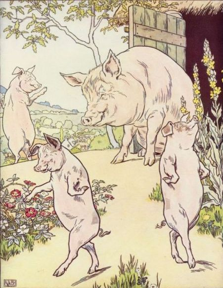
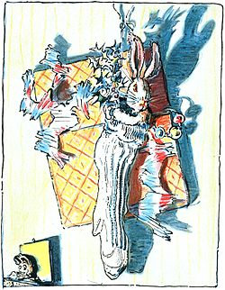
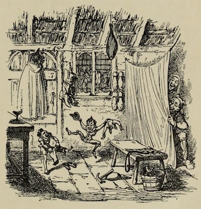

The story of The Three Little Pigs featured here has been adapted from different sources and from childhood memory.
The Velveteen Rabbit starts out on Christmas morning. A young boy finds a stuffed rabbit nestled in his stocking. He loves the rabbit but forgets about him when more glamorous and expensive Christmas presents arrive. But chance will intervene twice in this magical story about childhood toys and the transformative power of love.
Jack and the Beanstalk first appeared as The Story of Jack Spriggins and the Enchanted Bean in 1734.

Little Red Riding Hood is a European fairy tale about a young girl and a Big Bad Wolf.

The Elves and the Shoemaker is a fairytale made by the Brothers Grimm.
The Bogey-Beast is a delightful fairy tale about how luck is all relative.